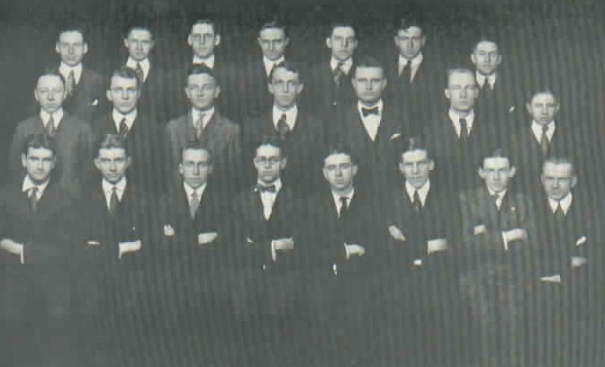
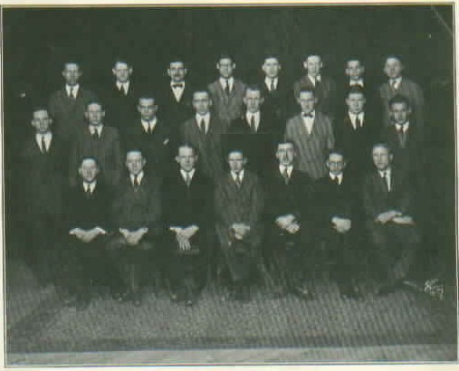
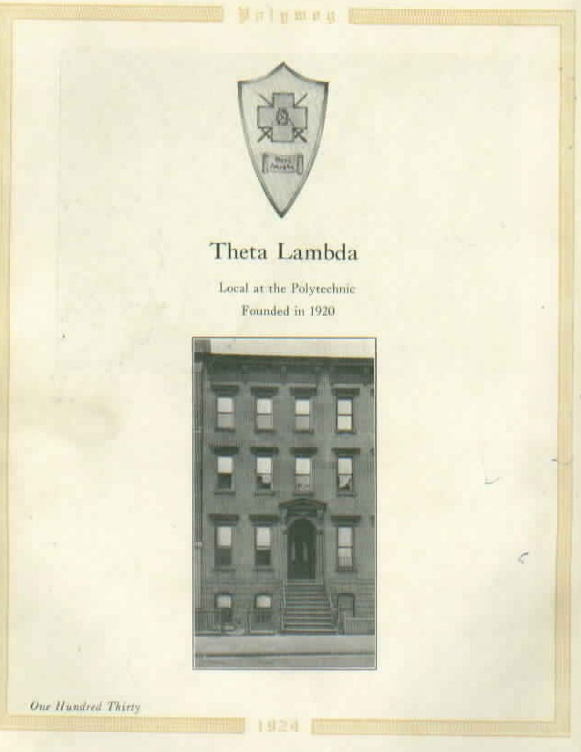
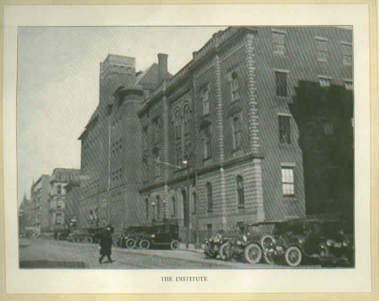
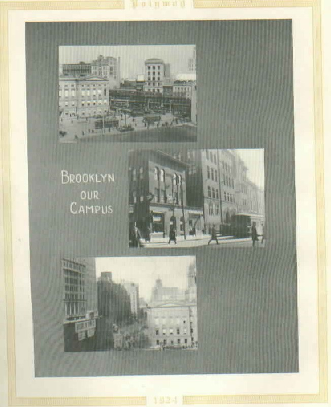

Theta Lambda, a Local FraternityThe chapter started out as a local fraternity, Theta Lambda, in 1920. Theta Lambda applied to become a chapter of Lambda Chi Alpha but was turned down. Lambda Chi Alpha recommended that Theta Kappa Nu might be a better match for the local fraternity, so Theta Lambda applied to Theta Kappa Nu and was accepted as the thirteenth chapter of Theta Kappa Nu. When Lambda Chi Alpha and Theta Kappa Nu merged in 1939, we finally did become a chapter of Lambda Chi Alpha. Fraternities at Poly Before UsPoly has a long history of fraternities on campus; we were not the first. The 1914 issue of The Polywog lists the following fraternities on campus and the year in which the chapter at Poly was founded:
The 1920 issue of The Polywog (the year Theat Lambda was founded, but not in time to make it into the yearbook) lists the following fraternities and years the chapter at Poly was founded:
Theta-Lambda: May 6, 1920—January 24, 1925Theta Lambda was founded as a local fraternity at Poly. Theta Upsilon Zeta of Lambda Chi Alpha had its beginning with four members of the class of 1921 at the Polytechnic Institute of Brooklyn. During the years that these men were students, the choice of fraternities was restricted to a single national and a single local. With this in mind and with the firm conviction that another national fraternity could be brought to Brooklyn Poly, Henry Hotchkiss Jr. , Frederick Kraissel Jr. (ThU 1), William F. Chester, and Leroy Jenkins met in the General Chemistry Laboratory on the Evening of May 6, 1920 and bound themselves in the bonds of the brotherhood of Theta Lambda. A brief but effective ritual was written around a solemn oath. The announcement of the formation of a new Greek society was made immediately through the columns of the college newspaper, and several students closely associated with the founders expressed interest. Several men were initiated during the summer months, the first being Arthur H. Wehle. The founders also enlisted the assistance of a non-member in their effort to maintain the Greek society. They secured a $200 loan from Charles E. Potts, Chairman of the Institute's Board of Trustees to be used for the rental and furnishing of suitable quarters. This loan was repaid within one year. Potts was offered many times membership in the group, but always declined because of his positions with the institute. With the loan and fees of the men initiated during the summer months, the officers proceeded to rent an apartment across the street from the school. It consisted of two large rooms and a lavatory. The members bought material and divided one of the large rooms into two, painting the interior of the new rooms black and using for initiations and secret meetings. The founding members of Theta Lambda became prominent campus figures during the first year. At the end of the first year, the active membership was at 30. Although Frederick Kraissel is looked upon as the principal founder (he planned the laws and wrote the ritual), it was Hotchkiss who was the first sage (president). Because of the sincere and consistent guidance of these two men, the chapter continued to prosper during those early years. Kraissel was an undergraduate for only a year after the founding, completing his degree in Electrical Engineering in 1921. Hotchkiss, however, continued, and was again elected sage. During the second year of existence, the chapter continued to grow in size and influence. In the first year, overtures were made towards nationalization in the direction of Sigma Pi. This was a natural approach since Jenkins' brother was a member of that fraternity at Cornell and had outlined Theta Lambda's chapter government in enough detail to warrant patterning the organization thereon. The nationalization effort was not pursued, however, because Sigma Pi did not feel the group had aged enough. During the following two years, concentration on internal organization became paramount. Several initiates came from evening classes, and membership grew rapidly. It was during this period continually active members were made brothers. Among them were Campbell '22, Wehle '21, Lewis '24, Derby (QU 13, and a Grand High Alpha) '25, Hoefeldt '27, and Wehlers '27. Harry & Campbell succeeded Hotchkiss as sage and the chapter continued to progress, reaching a membership of 35. William C. Andre '23 followed Campbell as sage, and Campbell revived interest in nationalization. Derby and Leibe were authorized to contact Bruce H. McIntosh of Lambda Chi Alpha regarding the possibility of being given a charter on September 18, 1923. McIntosh addressed a meeting of Theta Lambda on December 4, 1923. Members of Theta Lambda visited Lambda Chi Alpha chapters at Rutgers, Pennsylvania, Cornell, Syracuse, and Union. In the midst of this activity, the local fraternity succeeded in renting a house at 40 Sidney Place. Fred J. Beck, Jr. was the next and last sage of the local fraternity. A number of important things happened during this term. The fraternity membership totaled 45, and because of its size, men from evening classes were eliminated as candidates for future membership although 10 had already been initiated. It was also during this year that Lambda Chi Alpha's Grand High Zeta recommended that petitioning activity be ceased because of its belief that none of the colleges in New York City offered a proper field for fraternity activity. They recommended, however, that Theta Lambda give consideration to a new national fraternity, Theta Kappa Nu, which had only existed four months at that time, but which gave promise of becoming a highly successful organization. At this time the committee on nationalization was under the chairmanship of Elles M. Derby. After several weeks of investigation and discussion, the active chapter voted to petition Theta Kappa Nu. A charter was granted to the local as the New York Alpha Chapter, and it was installed on January 24, 1925, by Donald F. Lybarger, the Grand High Treasurer, and Perry Schwartz. Both were alumni of a founding chapter at Gettysburg. Forty-six Alumni and graduates became charter members. Fred J. Beck, Jr. was elected the first president, called archon. Here is a Theta Lambda's coat of arms:
Here is a picture of the Theta Lambda Brother's badge and pledge pin. (The
picture was taken by Cross and Crescent editor Betsy Bly from the display
of local badges at headquarters in Indianapolis.) The badge and pledge pin were
donated by William L. Hiscox, class of '27.
The Brother's badge consists of a gold "lambda" with a "theta"
superimposed on it. The oval of the theta is set with pearls; the cross-bar has an emerald in the center.
The pledge pin is a circle, the face colored green with a gold "Lambda" in the middle.
According to the 1920 issue of The Polywog, there were nine fraternities on campus that year, three of them established in 1920:
Members of Theta Lambda that first year of existence were:
Here is the group photo from the 1921 issue of The Polywog.  The 1924 issue of The Polywog, edited by Elles M. Derby, ThU 13, listed ten fraternities:
According to The Polywog, the fraternity was located at 76 Court Street. Members of Theta Lambda listed in The Polywog for 1924 were:
Here is the group photo from the 1924 issue of The Polywog.  By this time, the fraternity had moved to rented space at 40 Sidney Place, where they stayed until they (by then Theta-Upsilon zeta of lambda Chi Alpha) moved to our current address--36 Sidney Place.. Here is a picture of 40 Sidney Place from the 1924 issue of The Polywog.  Here's a picture of Poly, located at 99 Livingston Street, from that yearbook:  Here are some shots of campus from that yearbook:  |